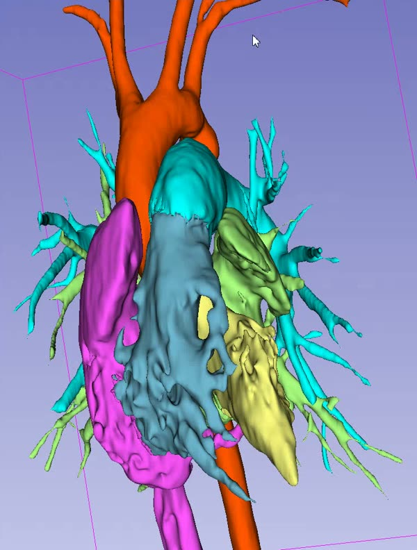

Create a case, segment the heart, explore it in 3D
Short walkthroughs that follow one congenital heart disease case from the casebook, through segmentation in Trinetra Segment, to an interactive model in Trinetra Studio, then on to virtual imaging, virtual surgery, implant planning and a finished report. Each part has a short video, then step-by-step screenshots. Click any screenshot to open it full size.
Casebook→Segment→Studio→Plan→Report

Part 1 · Casebook · ~3 minutes
Creating a case in the Trinetra casebook
Slow stretches such as typing are sped up. A red badge in the corner shows the speed.
Every patient case in Trinetra starts in the casebook. A case holds the case details, its imaging files and its stage in the workflow. Everything stays on this computer ("Local only — nothing leaves this device").
Any identifier you use: MRN, hospital number, study ID, etc.
Title
A short, recognisable name, e.g. "John Doe – CHD Case"
Diagnosis
The working diagnosis. "TBD" is fine for now
Procedure
The planned procedure, e.g. "Surgical Repair of Defect"
Date
Defaults to today
Click the Stage dropdown to set where the case is in the workflow: New → Segmenting → Planned → Discussed → Operated → Archived. New cases start at New. Stages are for your own tracking. Move a case along as it progresses, and use the Stage filters in the sidebar to see what's at each point.
Tags: comma-separated keywords, e.g. CHD, Surgical. Tags become filter chips at the top of the casebook.
Notes: the plan, MDT discussion or outcome, e.g. "For Surgery – Needs Model".
Files: drag and drop reports, letters and other documents onto the box so they're kept with the case. You can also click choose them to browse. Dragging and dropping is quickest.
Trinetra Segment opens in its own window, running on 3D Slicer.
The four tabs show the workflow: 1 Import → 2 Segment → 3 Cardiac Cycle → 4 Complete.
You start on Import. Continue with Part 2 — Segmenting a cardiac case.
Part 2 · Trinetra Segment · ~10 minutes
Segmenting a cardiac case in Trinetra Segment
Slow stretches such as typing are sped up. A red badge in the corner shows the speed.
Trinetra Segment runs inside 3D Slicer and opens from the casebook (Open in Segment, see Part 1). Work left to right through the tabs: 1 Import → 2 Segment → 3 Cardiac Cycle → 4 Complete. The 3D model updates live in the right-hand panel.
Trinetra confirms where the case was saved. It exports each segment as an STL, plus a label map and the source CT, then opens the result in Trinetra Studio. Continue with Part 3 — Visualising in Trinetra Studio.
Part 3 · Trinetra Studio · ~5 minutes
Viewing and manipulating the model in Trinetra Studio
Slow stretches such as typing are sped up. A red badge in the corner shows the speed.
When you click Complete segmentation for Trinetra Studio (end of Part 2), the case opens in Trinetra Studio with every structure loaded as its own 3D model.
Click Save project to keep colours, views, clipping and notes with the case.
Part 4 · Advanced tools · ~12 minutes
Virtual imaging, virtual surgery and implants
Slow stretches such as typing are sped up. A red badge in the corner shows the speed.
These tools live in the left tool bar of Trinetra Studio. The flyout next to the 3D view gives one-click access to the same tools (Endoscope, Measure, Annulus, Scissor, Sculpt, Surface path, Route) plus Undo last edit.
You're now inside the anatomy. Drag to look around, and scroll or use the arrow keys to move forward and back. Click Exit (top of the view) or Exit figure to leave.
Choose what the cut does: Remove the region, Keep only it, or Split off into a new mask.
Draw a loop around the region. The cut goes straight through along your line of sight, so rotate to the angle you want first. Undo cut or Restore all if needed.
Draw on inside surfaces: off, points land on the outer wall. On, they land on the inner surface, inside a chamber.
Click Start surface path (or Freehand) and click points on the surface. After three points the first turns green. Click it, or Close loop, to close the outline.
Under Patch from loop, set Rings, Dome height, Dome direction (outward/inward) and Thickness, then click Build patch. The patch appears as its own mask (e.g. patch 1).
Under Virtual surgery, select a mask and click Copy selected mask for visual editing. The original is kept. Optionally Create wall shell to give the copy a wall thickness.
Click Start excision outline, click points around the area, then Close outline and Excise visible surface. Only the frontmost visible triangles are removed.
The edited copy appears as a new mask, e.g. PA (virtual surgery), marked cut.
Draw a surface path around the opening and Build patch to close it. Here a patch is placed over the opened pulmonary artery.
Step 6Plan a conduit route
Click Plan in the left tool bar.
Or pick Route in the flyout. Click Start route, click a start point (e.g. on the aorta), then Add destination and click the end point (e.g. on the PA). Add guide points to shape the path. Preview path shows it, and you can drag the purple points to adjust.
Set the conduit's Outer diameter. The panel shows the inner opening and wall.
Click Create sealed visual conduit. The conduit is added as its own mask.
Step 7Generate an implant
Click Implant, then Open implant generator. The Cardiac Implant Generator opens in its own window.
Browse device families (surgical valves, TAVI, TPVR, stents, occluders, rings) or search by manufacturer or model.
Pick a Size. Geometry is shown with its source: LIT (published), CALC (calculated) or ASSUMED.
Click Add to active Studio project. The device appears in Studio next to the model.
Step 8Fit annulus rings and align the implant
Pick Annulus in the flyout. Click Place annulus points and click points around the implant's rim (five is enough, more gives a better fit), then Fit current ring. Repeat on the target anatomy, e.g. the PA.
Under Annulus alignment:
Mesh to move: the implant.
Ring on mesh to move: the implant's annulus.
Target annulus: the anatomy's annulus (e.g. PA Annulus · PA).
Click Align centrepoints. The implant jumps to the target.
Fine-tune under Move & join: Pos X/Y/Z and Rot X/Y/Z sliders, or Spin around the implant's own axis with Turn −/+. Choose Fix an annulus point while turning to pivot around the ring.
Part 5 · Report · ~6 minutes
Reporting a case
Slow stretches such as typing are sped up. A red badge in the corner shows the speed.
The Report panel turns the case into a structured report: case details, captured figures, findings and plan, plus an optional sequential segmental analysis and the segmentation audit trail.
Step 1Open the Report panel and fill in the case details
Click Report in the left tool bar.
Fill in Case title, Reference / MRN (optional) and Prepared by.
Under Figures, you'll caption and capture views (next step).
Findings and Plan come later.
Step 2Capture figures
Set up the model as you want it in the report. Click a saved view on the Views tab to jump straight to it.
Type a caption in Caption for the next figure, then click Capture this view. Each figure is listed with its thumbnail and caption, and you can edit or remove it.
Your saved views from Part 3 are a quick way to get consistent angles.
Step 3Write findings and plan
Findings: what the anatomy shows, e.g. "Double aortic arch case needing surgical repair".
Plan: the proposed approach, e.g. "Surgical repair and arch reconstruction".
Include measurements: adds measurements from Measure & mark to the report.
The report tools:
Open report workspace: preview the report beside the 3D scene.
Sequential segmental analysis: build a structured description (Steps 5–6).
Segmentation audit log: the record of every segmentation step.
Save report as PDF: export an A4 PDF.
Step 4Preview the report
Click Open report workspace. The Live preview tab shows the report as it will print.
The other tabs: Saved views, Captured views, Sequential analysis and Segmentation audit.
The report lists every structure (anatomy), then Findings, Plan and Figures. It updates as you edit.
Step 5Sequential segmental analysis
Click Sequential segmental analysis. It walks you through an Andersonian analysis one segment at a time.
The steps on the left: cardiac position, venous connections, atrial segment, AV junction, ventricles, arterial trunks. Completed steps get a tick.
Each step explains what to look at.
Click the card that matches the anatomy, e.g. Apex to the left. Open Embryology — why this morphology occurs to learn more.
Some steps ask direct questions, e.g. which ventricle each atrium drains into.
Trinetra works out the connection label for you, e.g. Derived connection: Concordant. Use Next → to move on, or Skip — I don't know.
Step 6Add the analysis to the report
Click Full report to see the result.
The sequential segmental description is written out in full, e.g. Apex to the left · Usual arrangement · Concordant · Concordant.
Likely diagnosis (pattern match) suggests the best-fitting pattern with a confidence level.
Tick Include in report and click Append description + schematic.
The checkbox confirms it's included.
A schematic drawing of the chambers and great arteries is generated and added to the report.
Step 7Check the audit trail and save
Back on Live preview, the report now includes the sequential analysis and the Segmentation activity audit: every segmentation step with its time. Patient identifiers are not logged.
Segmentation audit log opens the full log on its own.
Click Save report as PDF to export the finished report.
Trinetra runs locally. Nothing leaves this device. For research and education only, not for diagnosis or treatment decisions.